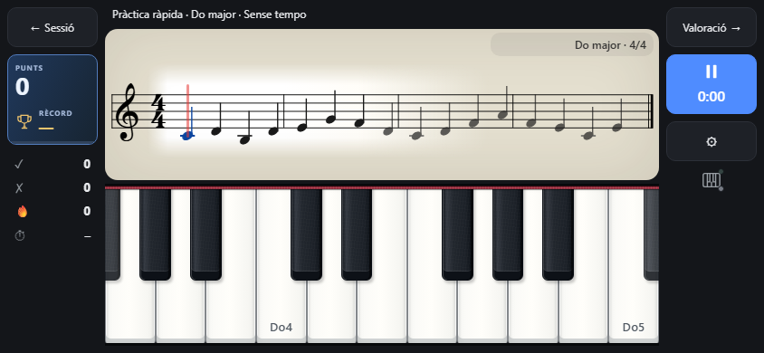

SPino
El teu quadern de piano
Fes lloc a la música. Crea una rutina, tingues les partitures a mà i observa com creix la teva pràctica. Al piano o fora de casa, SPino t’ajuda a fer el pas següent.
Beta · 6.0.0-beta.4 (43)
Versió en proves: iOS, Core MIDI, recordatoris, temes clar/fosc recorregut guiat, connexió de quaderns per QR i còpies compatibles o organitzades.
Simulador iOS per a MacLa descàrrega d’iOS funciona al simulador de Xcode en Mac. Encara no es pot instal·lar en iPhone/iPad ni en TestFlight: cal la signatura d’Apple Developer. No tinc un iPhone i el compte d’Apple Developer costa uns 100 dòlars l’any. De moment no tinc cap motiu per pagar-lo. Si t’interessa una versió per a iOS, escriu-me a support@spinoapp.com.
SHA-256
Un espai per a cada manera de practicar
Llegeix al teu ritme
Exercicis nous de lectura i tècnica, amb una mà o amb totes dues. Tria un tempo o practica sense rellotge. El ritme i el registre s’adapten al teu nivell de pianista.
Escalfa abans de tocar
Una sèrie rotativa i opcional d’exercicis Hanon a l’inici de la pràctica amb piano, amb il·lustracions pas a pas de la posició de les mans.
Connecta el teu piano
El MIDI per USB o Bluetooth comprova les respostes de notes compatibles, inclosos els acords. També pots fer servir un piano acústic i registrar la pràctica manualment.
Rutines per al dia a dia
Crea, ordena i ajusta la durada dels blocs. Planifica una rutina desada des del calendari i decideix el tempo quan practiquis.
Les partitures, a mà
Tria les obres de l’atril, importa PDF i explora el catàleg. Anota els PDF; fes servir el zoom editable i la digitació vinculada a les notes en partitures MusicXML.
Un repte musical ràpid
Un toc obre la pràctica en pantalla: sense tempo, una mà i clau i posició aleatòries. Suma punts per precisió i rapidesa i supera el teu rècord personal.
Troba el teu pols
Pràctica lliure amb metrònom sonor, visual o combinat, controls de tempo i volum, marcatge del tempo amb pulsacions i tempos preferits.
Mira com creix el teu hàbit
Ratxes setmanals de pràctica i d’objectius assolits, i les darreres quatre setmanes comparades amb l’objectiu actual. Les sessions desen temps i reflexions.
SPino per dins
Vista prèvia del desenvolupament amb quaderns d’exemple en català, castellà i anglès. Les captures il·lustren la beta en evolució; no corresponen a la versió estable 5.2.3 de la botiga.



El teu quadern, tu decideixes
Sense compte de l’app, anuncis ni servidor propi de SPino. El quadern es desa al dispositiu. La còpia i sincronització opcionals fan servir un fitxer triat amb el proveïdor de fitxers del dispositiu; un proveïdor com Google Drive pot requerir un compte propi.
Política de privacitat (castellà i anglès)Spino Arcade · Laboratori de joc
Un joc musical nascut de Spino: Smart Piano Notebook. Llegeix notes en moviment, segueix el ritme i encadena ratxes, amb instruments amb mostres i progressió gradual.